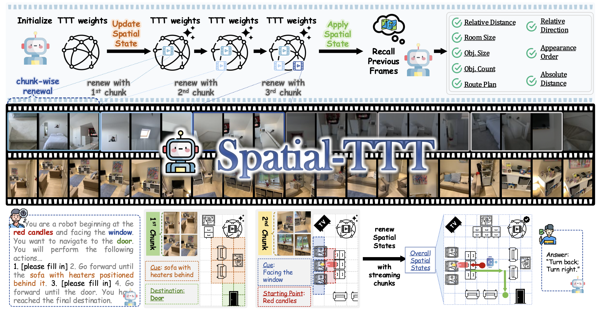
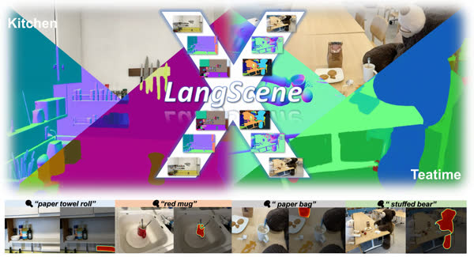

Undergraduate @ Department of Electronic Engineering, Tsinghua University.
I'm serving as an intern working closely with Prof. Yueqi Duan and Fangfu Liu.
My research interests lie in 3D Computer Vision and Video Generation.
Undergraduate @ Department of Electronic Engineering, Tsinghua University.
I'm serving as an intern working closely with Prof. Yueqi Duan and Fangfu Liu.
My research interests lie in 3D Computer Vision and Video Generation.
* indicates equal contribution, † indicates Corresponding Author.


